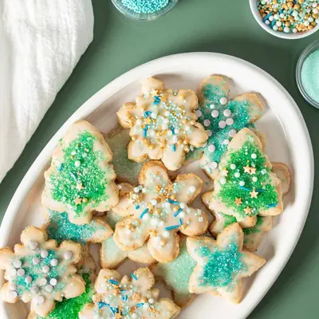

Vegan Gluten Free Sugar Cookies

Ingredients
- 1 cup oat flour (gluten free if needed )
- 1 ¼ cup almond flour (make sure it’s the super fine kind )
- ¼ cup tapioca starch
- 2 teaspoons baking powder
- ½ teaspoon sea salt
- 1 cup cane sugar
- ½ cup butter (dairy free if needed, softened but not melted)
- 2 teaspoons vanilla extract
- 2 cups powdered sugar
- 4 tablespoons water (adjust for the thickness you want)
- 2 teaspoons maple syrup (this helps the icing stick better to the cookies)
- pinch salt
- ½ teaspoon vanilla extract (don’t use if you want pure white icing)
- gel food coloring and sprinkles to decorate (optional)
Steps
- Preheat oven to 350 degrees F / 175 C.
- Put flours/starch, baking powder, and salt in a bowl. Whisk well to remove clumps and combine.
- In another bowl, add sugar, softened butter and vanilla. Beat with a hand or stand mixer (using the whisk attachment) until fluffy.
- Add in the flour mixture as you mix and continue to mix until it is combined well. Switch to a paddle attachment if using a stand mixer.
- Knead with hands until you get a ball, then wrap in plastic and chill for at about 15-20 minutes. I tested working with it right away and it actually worked well. It was a little fragile so I made sure I only rolled the dough out to no less than ¼ inch.
- Once chilled, put the dough on a piece of parchment paper, then place another piece on top. Using a rolling pin, roll out the dough. Ideally you want it to be no less than ¼ inch thick or the shapes will get pretty delicate and hard to move to the cookie sheet.
- Use cookie cutters to cut out cookies. Place cookies on a parchment lined baking sheet. Carefully peel away the scraps and use them to form another ball and then repeat the process of rolling it out, cutting out shapes, and forming a ball until you are left with very little to no dough. If the dough softens too much (it can happen if you are working in a warm area), then place the parchment with cookies in the fridge to harden a bit so you can peel them off the parchment without them breaking. You can also place a hand under the parchment paper and lift the cookie that way.
- Bake cookies for 10-11 minutes until golden at the edges. Mine took 10 minutes. Allow to cool completely before removing or they will break. At least 10 minutes.
- If you plan to make the icing, once cookies are completely cool (the next day is best), prepare the icing by mixing icing ingredients in a bowl with a whisk until smooth. Add gel food coloring if using and mix in.
- To ice the cookies, I found it easiest to dip the tops (flat side down) into the bowl very carefully so you just get icing on the tops, then put them on a plate, rack or back on the cooled baking sheet to harden. Allow the icing to drip off the tops before turning them back up or it could run off the sides. You may need to keep whisking the icing as it could form a crust on the top depending on how fast you work. You can also put the icing in a piping bag and decorate that way.
- If you are decorating the cookies make sure to put sprinkles, etc on top while the icing is wet and not hardened. Or decorate as you prefer.
Recipe by Anjali Shah, from The Picky Eater. Saved here for personal use; the original has the full notes, tips and photos. Open original